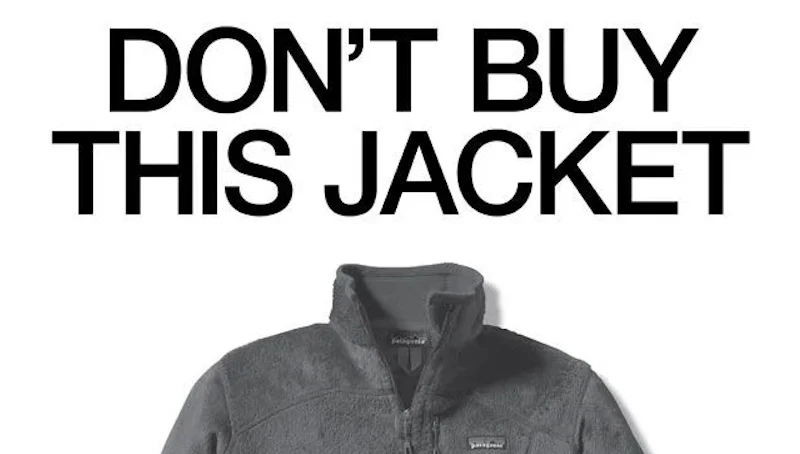
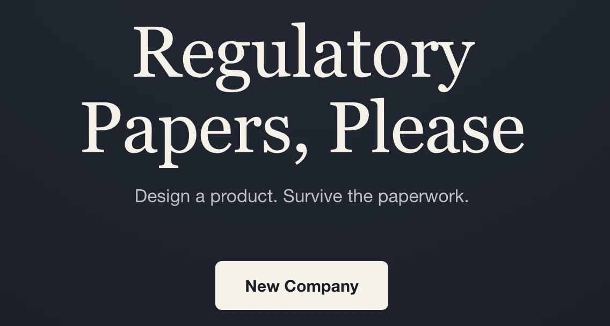

Patagonia's Worn Wear
A clothing company that runs ads asking you not to buy a new jacket.
Read case study →Guiding questionHow can design for sustainability ensure we meet our current needs without compromising our future existence?
Sustainability is the part of design where good intentions are least useful. Almost everyone agrees products should do less harm and almost nobody agrees on how to measure it, which is why this topic hands you frameworks instead of opinions. Datschefski's five principles and the Triple Bottom Line exist so that you can make a specific, checkable claim about a product rather than calling it green and hoping nobody asks.
Use them sceptically. A framework is a tool for structuring an argument, never proof that the argument is right, and a product can score well against one while still being something the world did not need. The Triple Bottom Line deserves particular interrogation: it places profit alongside people and planet deliberately, and whether that is a realistic accommodation or a convenient escape hatch is a genuinely open question you are allowed to have a view on. What examiners want is a view supported by evidence, so learn the frameworks well enough to apply them precisely, and then argue with them.
Students must be able toDiscuss strategies to achieve sustainability and the importance of decision-making when addressing issues related to sustainable design, including waste, pollution and energy consumption.
Sustainable development was defined by the Brundtland Commission (1987) in its report Our Common Future as: "meeting the needs of the present without compromising the ability of future generations to meet their own needs." This definition underpins all design-for-sustainability thinking: designers must consider not just the user in front of them but the long-term impact on resources, ecosystems, and communities.
Designers apply sustainability through two complementary approaches:
Key decision areas for designers: When developing a product, sustainability-conscious decision-making covers:

Develop a product from concept to market and watch a corner cut early resurface as a failed safety test, a certification refusal or a recall.
Students must be able toAnalyse sustainable products to demonstrate how they meet Datschefski's principles.
Greenwashing happens when a company markets a product as sustainable on the strength of one small, superficial environmental feature, misleading consumers through advertising and media. A company might market a product as "eco-friendly" because it contains 5% recycled material, while the remaining 95% uses virgin non-renewable inputs. In response to this, Edwin Datschefski (2001) developed five principles to judge a product's true sustainability and provide a clear benchmark rather than vague terms like "green" or "natural."
The five principles of sustainable design are:
Datschefski proposed a "100-cubed project": the aspirational goal that 100% of products become 100% sustainable by the year 2100. While no product currently satisfies all five principles fully, they provide a measurable framework for incremental progress and a challenge to greenwashing.

A clothing company that runs ads asking you not to buy a new jacket.
Read case study →Students must be able toExplain the TBL and the relationship between the three Ps (people, profit, planet), which includes conflict and compromise.
The Triple Bottom Line (TBL) was attributed to John Elkington (1995). It measures an organisation's or product's level of success across three dimensions (the three Ps) rather than on financial performance alone:
The three Ps are often visualised as three overlapping circles (a Venn diagram). The intersection of all three is the zone of genuine sustainability: where a design meets social, environmental, and economic criteria simultaneously. Products or businesses that satisfy only one or two dimensions are not fully sustainable:
Conflicts between the three Ps are common and central to the designer's challenge:
Score a product on People, Planet and Profit, or load one of the examples below and watch the balance (or imbalance) shift on the diagram.
Students must be able toExplain how the TBL can help designers to prioritize the needs of clients, communities and the environment to discover design opportunities.
Because the three Ps of the TBL are frequently in conflict, designers cannot optimise all three simultaneously: they must make informed trade-off decisions. The TBL framework helps by making these trade-offs explicit and visible, rather than hiding environmental or social costs inside a single profit figure.
How designers use the TBL for decision-making:
Strategies for resolving TBL conflicts:
The TBL is not a checklist but a thinking tool. No product will score perfectly across all three dimensions; the goal is conscious, evidence-based decision-making that moves toward the TBL intersection rather than away from it.
A stakeholder is any person or group with an interest in, or affected by, a design decision: not just the client who commissions the work or the end user who buys it. In a TBL analysis, the three Ps map almost directly onto three stakeholder groups: Profit concerns the client and investors, People concerns workers, communities and end users, and Planet concerns everyone who shares the environment the product is made and disposed in, including people who will never use the product at all.
Recognising the full set of stakeholders is what makes a TBL trade-off visible in the first place. A decision that looks purely financial when the only stakeholder considered is the client (cheaper materials, lower wages, faster disposal) reveals hidden costs as soon as workers, neighbouring communities and future generations are counted as stakeholders too.
Ten questions covering sustainability strategies, Datschefski's five principles, the Triple Bottom Line, and TBL trade-offs. Select one answer per question, then click "Check all answers" to see your score and the explanations.
A company sells household cleaner as a small dissolvable tablet. The customer buys a refillable spray bottle once, then buys tablets, drops one into the bottle and adds tap water.
A conventional cleaner is sold ready mixed in a new plastic bottle each time.
Table 1: One year of use, twelve bottles of cleaner
| Ready mixed | Tablet and refill bottle | |
|---|---|---|
| Plastic bottles manufactured | 12 | 1 |
| Mass shipped | 6.6 kg | 0.5 kg (tablets) + 0.1 kg (bottle) |
| Water content shipped | 95 % | 0 % |
| Tablet packaging | — | Paper sachet, compostable |
| Cost to customer per year | £24 | £30 first year, £27 after |
(a) State which of Datschefski's five principles the removal of shipped water most directly serves, see Table 1. [1]
(b) Outline how the tablet system reduces transport impacts, see Table 1. [2]
(c) Explain why the tablet system is more sustainable despite costing the customer more, see Table 1. [3]
(a) Efficient.
(b) Shipping falls from 6.6 kg to 0.6 kg over a year because 95 % of a ready-mixed bottle is water that is already available at the customer's tap. Less mass means fewer lorry journeys for the same number of customers, and because the tablets are small and not bottle-shaped they pack far more densely, so the volume moved falls even further than the mass.
(c) The extra £3 to £6 a year buys a change in what is being manufactured and moved rather than a better version of the same thing. Eleven fewer bottles are made each year per customer, and each of those is a moulded plastic part with its own oil feedstock, moulding energy and end-of-life problem, so the saving is in avoided production rather than in improved recycling. Ninety-five per cent of the shipped mass disappears, which removes a proportionate share of fuel, vehicle wear and warehouse space. The cost comparison also flatters the ready-mixed product, because the price of a plastic bottle does not include what happens to it afterwards, and the collection, sorting and landfill or incineration of twelve bottles is paid for by the community rather than by the customer. Sustainability is measured across the whole system, and on that measure a slightly higher price is buying a much smaller material and energy footprint.
(a) The five principles of sustainable design are that a product must be cyclic, solar, safe, efficient and social (Datschefski, 2001).
• Efficient ✓
Award [1] for the correct principle up to [1 max]. Accept cyclic if the response argues from the refillable bottle rather than from shipped water.
(b) Design for sustainability involves the choices and decisions made for developing designs and design methodologies.
• Shipped mass falls from 6.6 kg to 0.6 kg per customer per year ✓
• 95 % of a ready-mixed bottle is water already available at the customer's tap ✓
• Less mass means fewer lorry journeys for the same number of customers ✓
• Tablets are not bottle-shaped, so they pack far more densely ✓
• Volume moved falls further than mass, and vehicles usually fill by volume first ✓
• Lower mass reduces fuel consumption per unit delivered ✓
• Tablets can be posted rather than palletized, removing a delivery step ✓
Award [1] for each relevant brief point on the transport reduction up to [2 max]. Credit responses that quote values from Table 1.
(c) The triple bottom line measures levels of success in relation to social, economic and environmental factors, and cost to the customer is only one of these.
• The extra cost buys a change in what is manufactured, not a better version of the same product ✓
• Eleven fewer bottles are manufactured per customer per year ✓
• Each avoided bottle carries oil feedstock, moulding energy and an end-of-life problem ✓
• The saving is in avoided production rather than in improved recycling ✓
• 95 % of shipped mass is removed, with a proportionate saving in fuel and vehicle use ✓
• Paper sachets are compostable, so the remaining packaging leaves no persistent waste ✓
• The price of the ready-mixed bottle excludes the cost of dealing with it afterwards ✓
• Collection, sorting and disposal of twelve bottles are paid for by the community ✓
• Sustainability is measured across the whole system, not at the point of purchase ✓
• The premium falls after the first year, since the bottle is bought only once ✓
Award [1] for each relevant reason / cause explaining why the tablet system is more sustainable despite the higher price up to [3 max]. Credit responses that identify externalized costs.
A social enterprise makes a solar lantern for households with no grid connection. A small panel charges a lithium iron phosphate cell during the day, and the lantern gives eight hours of light. It replaces a kerosene lamp.
The enterprise assembles the lanterns in the country where they are sold, using imported cells and panels, and trains local agents to repair them.
Table 2: Solar lantern compared with the kerosene lamp it replaces
| Kerosene lamp | Solar lantern | |
|---|---|---|
| Purchase price | £2 | £14 |
| Running cost per year | £38 of kerosene | £0 |
| Indoor air pollution | Significant | None |
| Fire risk | Open flame | None |
| Service life | Years | 5 years, cell replaceable |
| End of life | Metal, recyclable | Cell and electronics require collection |
(a) State which of Datschefski's principles the lantern's power source satisfies, see Table 2. [1]
(b) Describe how assembling and repairing the lantern locally serves the social principle, see Table 2. [2]
(c) Justify the lantern's £14 purchase price to a household earning under £3 a day, see Table 2. [3]
(a) Solar.
(b) Assembly and repair work carried out locally keeps the wages and the skills in the community that buys the product, rather than exporting them to the manufacturer's country. Trained local agents also mean a failed lantern is repaired rather than discarded, which keeps the product working for a household that could not afford to replace it.
(c) The price is justified by what it removes rather than by what it provides. A kerosene lamp costs £2 to buy and £38 a year to run, so the lantern pays for itself in under five months and then saves the household roughly £38 every year for five years, which is more than twelve times its purchase price. That is a large sum relative to an income under £3 a day, and it is money returned to the household rather than spent. The lantern also removes an open flame and the indoor air pollution from burning kerosene, and the health and fire costs of those fall on exactly this household, so avoiding them has a real value that never appears in a price comparison. The genuine difficulty is not whether £14 is worth paying but whether a household on that income can find £14 at once, since kerosene is bought in small daily amounts. The justification therefore depends on the enterprise offering instalments or pay-as-you-go, without which a product that is clearly affordable over its life remains unaffordable to buy.
(a) • Solar ✓
Award [1] for the correct principle up to [1 max].
(b) The five principles of sustainable design are cyclic, solar, safe, efficient and social.
• Wages from assembly stay in the community that buys the product ✓
• Skills are developed locally rather than held by the manufacturer's country ✓
• Local employment is created in a place with limited opportunity ✓
• Trained agents mean a failed lantern is repaired rather than discarded ✓
• Repair keeps the product working for a household that could not afford a replacement ✓
• Local repair avoids shipping products back to a distant manufacturer ✓
• The agent network provides a route for the cell to be collected at end of life ✓
Award [1] for each detail, leading to an account of how local assembly and repair serve the social principle, up to [2 max].
(c) Designers make decisions by considering the balance between the three Ps of the triple bottom line.
Economic:
• Kerosene costs £38 a year against £0 running cost ✓
• The lantern pays for itself in under five months ✓
• Over a five year life it saves roughly twelve times its purchase price ✓
• The saving is money returned to the household rather than spent ✓
Social and health:
• Removes indoor air pollution from burning kerosene ✓
• Removes an open flame and the associated fire risk ✓
• Health and fire costs fall on this same household, so avoiding them has real value ✓
• Eight hours of light extends the hours available for study or work ✓
The real barrier:
• The difficulty is finding £14 at once, not whether it is worth paying ✓
• Kerosene is bought in small daily amounts, matching how income arrives ✓
• The justification depends on instalments or pay-as-you-go being offered ✓
• Without a payment mechanism a product affordable over its life is unaffordable to buy ✓
Award [1] for each valid reason / piece of evidence justifying the purchase price up to [3 max]. Credit responses that identify the affordability barrier as distinct from the value argument.
A clothing brand sells a cotton T-shirt for £5. It is designed to a price: single-stitched seams, lightweight jersey, and a printed graphic applied with plastisol ink. The brand releases new graphics every two weeks.
A second brand sells a T-shirt at £45 in heavier organic cotton with double-stitched seams, offers free repairs for life, and releases the same four styles each year.
(a) List two design decisions in the £5 T-shirt that shorten its useful life. [2]
Table 3: The two garments compared
| £5 T-shirt | £45 T-shirt | |
|---|---|---|
| Mean wears before disposal | 7 | 240 |
| Cost per wear | 71p | 19p |
| Water used in production | 2700 L | 2700 L |
| Cotton | Conventional | Organic |
| Repairable | No | Yes, free for life |
| New designs per year | 26 | 4 |
(b) Outline what the identical water figures in Table 3 show about the source of a T-shirt's environmental impact. [2]
The £5 brand argues that it makes clothing available to people who cannot afford £45, and that its factories provide employment in regions with few alternatives.
(c) Describe the tension between the social and environmental dimensions of the triple bottom line raised by the £5 T-shirt brand’s argument. [2]
The £5 brand announces a "conscious" range using recycled polyester, promoted with green packaging and a leaf motif, while keeping its two-week release cycle unchanged.
(d) Evaluate the "conscious" range against the five principles of sustainable design, see Table 3. [4]
(a) Single-stitched seams, which fail sooner than double-stitched ones; and a two-week graphic release cycle, which makes the design look dated long before the garment wears out.
(b) Both shirts consume the same 2700 litres, so almost all of a T-shirt's impact is incurred in growing and processing the cotton, before anyone has bought or worn it. That means the impact is fixed at the moment of manufacture and the only variable left is how many wears it is spread across, which is why 7 wears against 240 matters more than anything about the material.
(c) Cheap clothing genuinely serves people who cannot afford £45, and the factories provide income where alternatives are scarce, so shutting the model down would harm the people it employs and the people it clothes. Those same benefits depend on volume, and volume is what drives the environmental cost, because the model only works if garments are replaced constantly. The social good and the environmental harm are produced by the same mechanism rather than sitting side by side.
(d) Measured against the five principles the range fails on the one that matters most here and makes only marginal gains on the others.
Cyclic is the principle it claims. Recycled polyester does keep material in circulation and diverts bottles from waste, which is a real improvement on virgin fibre. It is a weak version of cyclic, though, because polyester jersey is not itself recycled at end of life in any volume, so this is a single downward step rather than a loop, and mixing polyester with cotton in a printed garment makes the result harder to recycle than the cotton shirt it replaces.
Efficient is where the range fails. Table 3 shows almost all impact is incurred in production, so efficiency is decided by wears per garment, and 7 wears is the number the two-week release cycle produces. Keeping that cycle unchanged means the range has altered the material and left the mechanism that wastes it exactly as it was. A more efficient garment worn seven times is still an inefficient product.
Safe is arguably worse rather than better, since polyester sheds microfibres into wastewater at every wash and the plastisol print remains. Solar is untouched: nothing in the announcement addresses the energy powering the factories. Social is unchanged, since the same factories and the same wages are involved.
Overall this is greenwashing in the specific sense Datschefski's principles were framed to expose. The leaf motif and green packaging communicate a change across the whole product, while the actual change is confined to one input and leaves the two-week cycle, the disposability and the seven wears untouched. A genuine response would have to slow the release cycle or make the garment repairable, both of which conflict with how the brand makes money, which is why the material was changed instead.
(a) • Single-stitched seams ✓
• Lightweight jersey ✓
• Plastisol print that cracks with washing ✓
• Two-week graphic release cycle ✓
• No repair provision ✓
• Designed to a price point rather than to a service life ✓
Award [1] for each relevant design decision up to [2 max].
(b) Design for sustainability involves the choices and decisions made for developing designs and design methodologies.
• Both garments consume the same 2700 L ✓
• Almost all impact is incurred in growing and processing the cotton ✓
• The impact occurs before the garment is bought or worn ✓
• It is fixed at manufacture and cannot be reduced afterwards ✓
• The only remaining variable is how many wears it is spread across ✓
• 7 wears against 240 therefore matters more than the choice of material ✓
• Organic cotton does not reduce water use, only the chemical inputs ✓
Award [1] for each relevant brief point on what the identical water figures show up to [2 max].
(c) The triple bottom line measures levels of success in relation to social (people), economic (profit) and environmental (planet) factors.
• Cheap clothing genuinely serves people who cannot afford £45 ✓
• The factories provide income in regions with few alternatives ✓
• Ending the model would harm the people it employs and those it clothes ✓
• Those benefits depend on volume ✓
• Volume is what drives the environmental cost ✓
• The model only works if garments are replaced constantly ✓
• The social good and the environmental harm come from the same mechanism ✓
• The two dimensions cannot be optimized independently ✓
Award [1] for each detail, leading to an account of the tension between the social and environmental dimensions, up to [2 max]. Award a maximum of [1] where the response addresses only one dimension.
(d) The five principles of sustainable design are that a product must be cyclic, solar, safe, efficient and social (Datschefski, 2001).
Cyclic, partly served:
• Recycled polyester keeps material in circulation and diverts bottles from waste ✓
• A real improvement on virgin fibre as an input ✓
• Polyester jersey is not itself recycled at end of life in volume, so it is one downward step, not a loop ✓
• Mixing polyester with a printed garment makes it harder to recycle than the cotton it replaces ✓
Efficient, failed:
• Table 3 shows almost all impact is incurred in production ✓
• Efficiency is therefore decided by wears per garment ✓
• 7 wears is produced by the two-week release cycle, which is unchanged ✓
• The material was altered and the mechanism that wastes it was left alone ✓
• A more efficient garment worn seven times remains an inefficient product ✓
Safe, arguably worse:
• Polyester sheds microfibres into wastewater at every wash ✓
• The plastisol print is retained ✓
Solar, untouched:
• Nothing addresses the energy powering the factories ✓
Social, unchanged:
• The same factories and wages are involved ✓
Judgment:
• This is greenwashing in the sense the five principles were framed to expose ✓
• The packaging communicates a whole-product change; the actual change is one input ✓
• A genuine response would slow the release cycle or make the garment repairable ✓
• Both conflict with the brand's revenue model, which is why the material was changed instead ✓
Award [1] for each distinct strength / limitation, leading to an appraisal of the range against the five principles, up to [4 max]. Award a maximum of [3] where fewer than three principles are addressed. Credit responses that identify greenwashing with reasoning rather than as an assertion.
Linking Questions